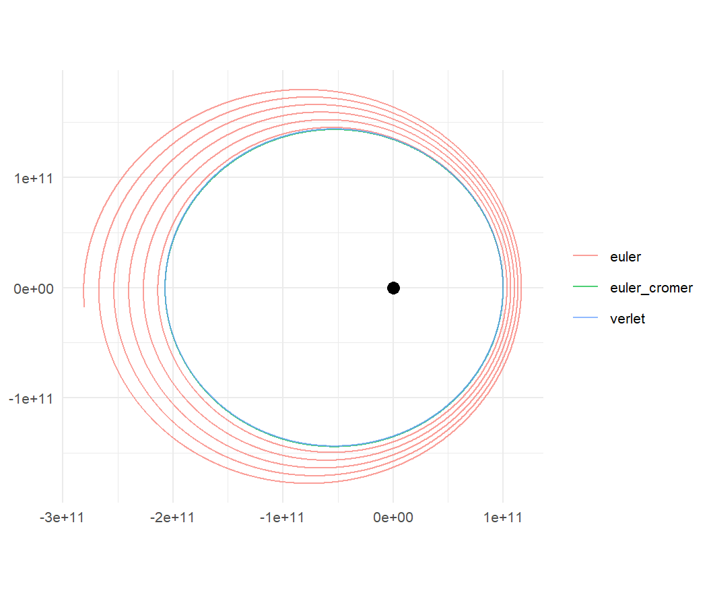
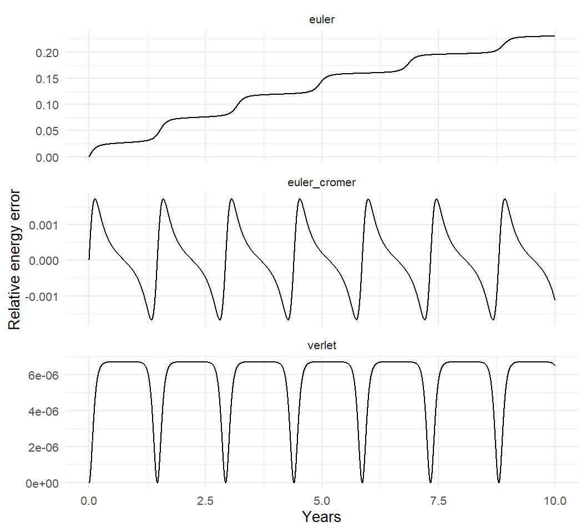

star_planet <- create_system() |>
add_body("Star", mass = 1e30) |>
add_body("Planet", mass = 1e24, x = 1e11, vy = 30000)
run <- function(method, time_step = seconds_per_hour * 6,
duration = seconds_per_year * 10) {
star_planet |>
simulate_system(time_step = time_step, duration = duration,
method = method) |>
mutate(method = method)
}
runs <- bind_rows(run("verlet"), run("euler_cromer"), run("euler"))5 Integrators: Euler, Euler-Cromer, and Velocity Verlet
Chapter 3 ended with the two halves of every N-body code: a function that computes accelerations from positions, and a function that advances the state by one step. This chapter is about the second one. simulate_system() offers three choices for it, through its method argument: "euler", "euler_cromer", and "verlet", the default. They differ by a few characters of code and by everything that matters. The textbook method quietly feeds energy into every orbit it touches; the default keeps a planet on a closed ellipse for as long as you care to run it. The reason is not that Verlet is “more accurate” in the usual sense. It is that Verlet respects a geometric property of Newton’s equations that Euler violates, and the goal of this chapter is to make that property concrete enough that you could check for it yourself.
5.1 The problem of taking a step
The state of a body is its position \(\mathbf{x}\) and velocity \(\mathbf{v}\), and the equations of motion say \(\dot{\mathbf{x}} = \mathbf{v}\) and \(\dot{\mathbf{v}} = \mathbf{a}(\mathbf{x})\), where the acceleration depends only on positions (Chapter 3). Given the state at time \(t\), we want the state at \(t + \Delta t\).
Taylor’s theorem is the whole toolkit. For a smooth trajectory,
\[ \begin{aligned} \mathbf{x}(t+\Delta t) &= \mathbf{x} + \mathbf{v}\,\Delta t + \tfrac12\,\mathbf{a}\,\Delta t^2 + \tfrac16\,\dot{\mathbf{a}}\,\Delta t^3 + O(\Delta t^4), \\ \mathbf{v}(t+\Delta t) &= \mathbf{v} + \mathbf{a}\,\Delta t + \tfrac12\,\dot{\mathbf{a}}\,\Delta t^2 + O(\Delta t^3), \end{aligned} \tag{5.1}\]
where everything on the right is evaluated at \(t\). We know \(\mathbf{x}\) and \(\mathbf{v}\), and we can compute \(\mathbf{a}\) from \(\mathbf{x}\). We do not know \(\dot{\mathbf{a}}\) or anything beyond it. Every integrator is a decision about what to do with the terms we cannot compute.
A method whose single-step error is \(O(\Delta t^{p+1})\) is said to be of order \(p\), because over a fixed total time \(T\) there are \(T/\Delta t\) steps and the errors accumulate to \(O(\Delta t^p)\). Halve the step and a first-order method’s error halves; a second-order method’s error drops by four. That is the usual way to grade integrators, and it will turn out to be only half the story.
5.2 Euler’s method
The simplest decision is to keep only the terms we can compute exactly and drop the rest:
\[ \begin{aligned} \mathbf{x}_{n+1} &= \mathbf{x}_n + \mathbf{v}_n\,\Delta t, \\ \mathbf{v}_{n+1} &= \mathbf{v}_n + \mathbf{a}_n\,\Delta t. \end{aligned} \tag{5.2}\]
Both updates truncate Equation 5.1 after the first power of \(\Delta t\), so the local error is \(O(\Delta t^2)\) and the method is first order. It is what every introductory text starts with, and it is method = "euler".
It is also wrong for orbits in a way that halving the step does not fix. Consider a body on a circular orbit, where \(\mathbf{v} \perp \mathbf{x}\) and \(\mathbf{a} \perp \mathbf{v}\). After one Euler step,
\[ |\mathbf{x}_{n+1}|^2 = |\mathbf{x}_n|^2 + 2\Delta t\,\mathbf{x}_n\cdot\mathbf{v}_n + \Delta t^2 |\mathbf{v}_n|^2 = r^2 + v^2\Delta t^2, \]
so the body ends the step slightly farther out, and
\[ |\mathbf{v}_{n+1}|^2 = v^2 + 2\Delta t\,\mathbf{v}_n\cdot\mathbf{a}_n + \Delta t^2 a^2 = v^2 + a^2\Delta t^2, \]
so it also ends the step slightly faster. Farther out means higher potential energy; faster means higher kinetic energy. Every single step adds energy to the orbit, in both accounts at once, and there is no step that ever takes any back. The orbit spirals outward, forever. A smaller \(\Delta t\) makes each step’s contribution smaller, but there are correspondingly more steps, and the sign never changes.
There is a cleaner way to see what is going on, using the simplest oscillating system there is: a mass on a spring, \(\ddot{x} = -\omega^2 x\), with state \((x, v)\). One Euler step is a linear map,
\[ \begin{pmatrix} x_{n+1} \\ v_{n+1} \end{pmatrix} = \underbrace{\begin{pmatrix} 1 & \Delta t \\ -\omega^2\Delta t & 1 \end{pmatrix}}_{M_{\mathrm{E}}} \begin{pmatrix} x_n \\ v_n \end{pmatrix}, \qquad \det M_{\mathrm{E}} = 1 + \omega^2\Delta t^2. \tag{5.3}\]
The determinant of a linear map is the factor by which it scales areas. The true dynamics of the oscillator carries any region of the \((x, v)\) plane around an ellipse without changing its area, a fact that holds for every Hamiltonian system and is known as Liouville’s theorem. Euler’s map scales area by \(1 + \omega^2\Delta t^2 > 1\) on every step. The oscillator’s energy is proportional to the area of the ellipse it traces in the \((x, v)\) plane, so a map that inflates areas inflates energies. Nothing about that depends on \(\Delta t\) being large.
5.3 Euler-Cromer
Here is a change so small it looks like a typo:
\[ \begin{aligned} \mathbf{v}_{n+1} &= \mathbf{v}_n + \mathbf{a}_n\,\Delta t, \\ \mathbf{x}_{n+1} &= \mathbf{x}_n + \mathbf{v}_{n+1}\,\Delta t. \end{aligned} \tag{5.4}\]
The velocity is updated first, and the position update uses the new velocity. This is method = "euler_cromer", also called the semi-implicit Euler method or symplectic Euler. Its local error is still \(O(\Delta t^2)\): it is a first-order method, no more accurate than plain Euler by the usual grading. But redo the oscillator calculation. Substituting the first line into the second, \(x_{n+1} = x_n + (v_n - \omega^2 x_n \Delta t)\Delta t\), so
\[ M_{\mathrm{EC}} = \begin{pmatrix} 1 - \omega^2\Delta t^2 & \Delta t \\ -\omega^2\Delta t & 1 \end{pmatrix}, \qquad \det M_{\mathrm{EC}} = (1 - \omega^2\Delta t^2) + \omega^2\Delta t^2 = 1. \tag{5.5}\]
Exactly one. The Euler-Cromer map preserves area, for every \(\Delta t\), just as the true dynamics does. An integrator with this property is called symplectic. (In one spatial dimension, symplectic means area-preserving; in more dimensions it is a slightly stronger condition that reduces to the same idea.) A symplectic integrator cannot have the systematic energy drift that Euler has, because energy drift is area growth. Its energy error oscillates, and for a small enough step it stays bounded forever.
Why does this version work when the other does not? The position update in Equation 5.4 uses \(\mathbf{v}_{n+1}\), which is the velocity at the end of the step. In effect it averages a forward-looking velocity with a backward-looking acceleration, and the two mistakes cancel in exactly the way needed to preserve area. There is a deeper structure here: the map is the composition of two exact flows, a “kick” that changes only the velocity and a “drift” that changes only the position, and each of those is itself symplectic because it is the exact solution of a Hamiltonian system (a free particle for the drift, a particle frozen in place for the kick). Composing symplectic maps gives a symplectic map. Plain Euler is not a composition of exact flows, and that is what it costs.
Euler-Cromer is fast, needing one acceleration evaluation per step, and is a reasonable choice for a quick preview. But first order is first order. Its positions drift in phase along the orbit at a rate proportional to \(\Delta t\) even when the energy is right, so a planet simulated with Euler-Cromer is on the correct ellipse at the wrong time. Something better is needed for real work.
5.4 Velocity Verlet
Go back to Equation 5.1 and keep one more term. The position expansion through \(\Delta t^2\) uses only quantities we have,
\[ \mathbf{x}_{n+1} = \mathbf{x}_n + \mathbf{v}_n\Delta t + \tfrac12\mathbf{a}_n\Delta t^2, \]
with local error \(O(\Delta t^3)\). For the velocity, the troublesome term is \(\tfrac12\dot{\mathbf{a}}\Delta t^2\). We cannot compute \(\dot{\mathbf{a}}\) directly, but having just computed \(\mathbf{x}_{n+1}\), we can compute \(\mathbf{a}_{n+1} = \mathbf{a}(\mathbf{x}_{n+1})\), and then approximate the derivative by the difference quotient \(\dot{\mathbf{a}} \approx (\mathbf{a}_{n+1} - \mathbf{a}_n)/\Delta t\). Substituting,
\[ \mathbf{v}_{n+1} = \mathbf{v}_n + \mathbf{a}_n\Delta t + \tfrac12(\mathbf{a}_{n+1} - \mathbf{a}_n)\Delta t = \mathbf{v}_n + \tfrac12(\mathbf{a}_n + \mathbf{a}_{n+1})\Delta t. \]
Together:
\[ \begin{aligned} \mathbf{x}_{n+1} &= \mathbf{x}_n + \mathbf{v}_n\,\Delta t + \tfrac12\,\mathbf{a}_n\,\Delta t^2, \\ \mathbf{a}_{n+1} &= \mathbf{a}(\mathbf{x}_{n+1}), \\ \mathbf{v}_{n+1} &= \mathbf{v}_n + \tfrac12\left(\mathbf{a}_n + \mathbf{a}_{n+1}\right)\Delta t. \end{aligned} \tag{5.6}\]
This is Velocity Verlet, method = "verlet". Position first, then the new acceleration, then the velocity using the average of the old and new accelerations, which is exactly the recipe in the package documentation. It is second order: halving the step divides the error by four.
Second order is nice, but it is not why the method is the default. Redo the oscillator one more time. With \(\mathbf{a} = -\omega^2 x\), the position update is \(x_{n+1} = (1 - \tfrac12\omega^2\Delta t^2)\,x_n + \Delta t\, v_n\), and substituting into the velocity update gives, after a few lines of algebra,
\[ M_{\mathrm{VV}} = \begin{pmatrix} 1 - \tfrac12\omega^2\Delta t^2 & \Delta t \\[2pt] -\omega^2\Delta t\left(1 - \tfrac14\omega^2\Delta t^2\right) & 1 - \tfrac12\omega^2\Delta t^2 \end{pmatrix}, \qquad \det M_{\mathrm{VV}} = 1. \tag{5.7}\]
(Multiply out the determinant: the \(\omega^2\Delta t^2\) and \(\omega^4\Delta t^4\) terms cancel exactly.) Velocity Verlet is symplectic. It is also time-reversible: if you take a step forward and then a step backward with the velocity reversed, you land exactly where you started, which is a symmetry the true equations of motion have and Euler and Euler-Cromer do not. Symplectic, time-reversible, and second order, at the cost of a second acceleration evaluation per step. (orbitr computes \(\mathbf{a}_n\) at the top of each step and \(\mathbf{a}_{n+1}\) after the position update, so a Verlet step costs two force evaluations to Euler-Cromer’s one. Since \(\mathbf{a}_{n+1}\) is the next step’s \(\mathbf{a}_n\), an implementation that kept it would pay for only one; Chapter 15 comes back to this.) For gravitational dynamics, that combination is very hard to beat.
Three names for one method
Velocity Verlet has two other common forms, and recognizing them will save you confusion when reading other codes.
The Størmer, or position, form. Write the Taylor expansion of \(\mathbf{x}\) both forward and backward in time and add them. The odd powers of \(\Delta t\) cancel:
\[ \mathbf{x}(t+\Delta t) + \mathbf{x}(t-\Delta t) = 2\mathbf{x}(t) + \mathbf{a}(t)\Delta t^2 + O(\Delta t^4), \]
so
\[ \mathbf{x}_{n+1} = 2\mathbf{x}_n - \mathbf{x}_{n-1} + \mathbf{a}_n\Delta t^2. \tag{5.8}\]
No velocities appear at all, and the local error in position is \(O(\Delta t^4)\), one order better than the derivation of Equation 5.6 suggested. Subtracting consecutive position updates of Equation 5.6 and using the velocity update to eliminate \(\mathbf{v}\) (Exercise Exercise 5.1) shows that velocity Verlet produces exactly the same sequence of positions as Equation 5.8. Velocity Verlet is just the Störmer form with the velocity carried along explicitly, which is convenient because you usually want the velocity.
The leapfrog, or kick-drift-kick, form. Split the velocity update of Equation 5.6 in half, doing the first half before the position update and the second half after:
\[ \mathbf{v}_{n+\frac12} = \mathbf{v}_n + \tfrac12\mathbf{a}_n\Delta t, \qquad \mathbf{x}_{n+1} = \mathbf{x}_n + \mathbf{v}_{n+\frac12}\Delta t, \qquad \mathbf{v}_{n+1} = \mathbf{v}_{n+\frac12} + \tfrac12\mathbf{a}_{n+1}\Delta t. \tag{5.9}\]
Substitute the first line into the second and you recover the position update of Equation 5.6; substitute it into the third and you recover the velocity update. The three forms are algebraically identical. The leapfrog form makes the kick-drift-kick structure explicit, and like Euler-Cromer it is a composition of exact flows, which is the structural reason it is symplectic. Astrophysicists usually say “leapfrog”; chemists say “velocity Verlet”; numerical analysts say “Störmer-Verlet.” They are all talking about Equation 5.6.
What “conserves energy” really means
Velocity Verlet does not conserve energy exactly. No method with a fixed step can, for a nonlinear force. What it does is better than it sounds. A symplectic integrator applied to a Hamiltonian \(H\) turns out to be the exact solution of a slightly different Hamiltonian, \(\tilde H = H + \Delta t^2 H_2 + \Delta t^4 H_4 + \cdots\), called the modified or shadow Hamiltonian. The integrator conserves \(\tilde H\) exactly, step after step (more precisely, over exponentially long times), so the true energy \(H\) can only wander as far from its starting value as \(\tilde H\) differs from \(H\), which is \(O(\Delta t^2)\). The energy error oscillates within a band and never leaves it. This is called backward error analysis, and Hairer, Lubich, and Wanner’s book is the standard reference (Hairer et al. 2006).
Euler has no shadow Hamiltonian, because it is not symplectic, and so its energy error is free to grow without bound. The difference between a bounded oscillation and a secular drift is the difference between a planet that is still there after a million years and one that is not.
5.5 Seeing it in orbitr
Here is the vignette’s comparison. A star and a planet, launched at 30 km/s from \(10^{11}\) m, which is an ellipse with \(e \approx 0.35\) and a period of about 535 days. To make the differences obvious I use a time step of six hours rather than the vignette’s one hour; with hourly steps the same things happen, more slowly.
runs |>
filter(id == "Planet") |>
ggplot(aes(x, y, color = method)) +
geom_path(alpha = 0.7) +
annotate("point", x = 0, y = 0, size = 3) +
coord_equal() +
labs(x = NULL, y = NULL, color = NULL)
The picture is the one in the documentation. Now the number behind it. The total energy of any N-body system is the kinetic energy of every body plus the potential energy of every pair,
\[ E = \sum_j \tfrac12 m_j v_j^2 \;-\; \sum_{j<k} \frac{G m_j m_k}{r_{jk}}, \tag{5.10}\]
and both are easy to compute from the output tibble. The potential energy needs every pair at every time step, which is a self-join on time:
total_energy <- function(sim, G = gravitational_constant) {
kinetic <- sim |>
group_by(time) |>
summarise(KE = sum(0.5 * mass * (vx^2 + vy^2 + vz^2)))
potential <- sim |>
select(time, id, mass, x, y, z) |>
inner_join(sim |> select(time, id2 = id, mass2 = mass,
x2 = x, y2 = y, z2 = z),
by = "time", relationship = "many-to-many") |>
filter(id < id2) |> # each unordered pair once
mutate(r = sqrt((x - x2)^2 + (y - y2)^2 + (z - z2)^2)) |>
group_by(time) |>
summarise(PE = -sum(G * mass * mass2 / r))
inner_join(kinetic, potential, by = "time") |>
mutate(E = KE + PE,
rel_error = (E - first(E)) / abs(first(E)))
}This is what the package’s get_energy() computes, one row per time step with kinetic, potential, and energy columns (and it reads the softening length from the run, so the potential matches the force law that was actually used). conserved_quantities() goes one step further and adds the relative error \((E - E_0)/|E_0|\) as energy_error, together with the total momentum and angular momentum, which Chapter 12 uses. Having seen the sum written out once, I will use those from here on.
energy <- runs |>
group_by(method) |>
group_modify(~ conserved_quantities(.x)) |>
ungroup()
energy |>
ggplot(aes(time / seconds_per_year, energy_error)) +
geom_line() +
facet_wrap(~ method, scales = "free_y", ncol = 1) +
labs(x = "Years", y = "Relative energy error")
The Euler run gains tens of percent of its binding energy in ten years and would eventually escape. The two symplectic runs show the bounded oscillation that backward error analysis promises: the error rises and falls once per orbit, biggest near periapsis where the planet moves fastest and a fixed step covers the most angle, and comes back to nearly zero each time. It does not accumulate.
Order, measured
The last claim to check is the order. Run Euler and Verlet at four step sizes and record the worst energy error over two years:
steps <- seconds_per_day * c(1, 0.5, 0.25, 0.125)
convergence <- bind_rows(lapply(c("euler", "verlet"), function(m) {
bind_rows(lapply(steps, function(dt) {
star_planet |>
simulate_system(time_step = dt, duration = seconds_per_year * 2,
method = m) |>
conserved_quantities() |>
summarise(max_rel_error = max(abs(energy_error))) |>
mutate(method = m, step_days = dt / seconds_per_day)
}))
}))
convergence |>
group_by(method) |>
mutate(ratio = lag(max_rel_error) / max_rel_error) |>
ungroup() |>
select(method, step_days, max_rel_error, ratio)
#> # A tibble: 8 × 4
#> method step_days max_rel_error ratio
#> <chr> <dbl> <dbl> <dbl>
#> 1 euler 1 0.238 NA
#> 2 euler 0.5 0.137 1.74
#> 3 euler 0.25 0.0736 1.86
#> 4 euler 0.125 0.0383 1.92
#> 5 verlet 1 0.000107 NA
#> 6 verlet 0.5 0.0000268 4.00
#> 7 verlet 0.25 0.00000669 4.00
#> 8 verlet 0.125 0.00000167 4.00Each halving of the step cuts Euler’s error by about two and Verlet’s by about four: first order and second order, as derived. The ratios are not exactly 2 and 4 because the error has higher-order pieces too, and because the “worst” error for Verlet is set by the periapsis passages, which a coarser step samples differently each time. They are close.
5.6 Choosing a time step
Everything above gives you the tools to choose time_step sensibly rather than by habit.
The fastest orbit sets the step. The error in a step depends on how much the acceleration changes during it, which is to say on how large a fraction of an orbit the step covers. In a system with the Sun, Earth, and the Moon, the Moon’s 27-day orbit, not Earth’s year, decides the step. A good rule of thumb is a few hundred to a thousand steps per orbit of the tightest orbit in the system: an hour for the Moon, a day for the planets, as the package defaults suggest.
Periapsis is where it hurts. For an eccentric orbit the body moves fastest at periapsis, and the angular rate there is \(h/r_p^2\), larger than the mean rate by a factor of roughly \((1+e)/(1-e)\) when \(e\) is substantial. A comet with \(e = 0.97\) moves through periapsis about sixty times faster than its average, and a step that is fine at aphelion is useless at perihelion. Chapter 13 deals with this.
Stability is not accuracy. For the oscillator, the Verlet map is stable (its eigenvalues stay on the unit circle) as long as \(\omega\Delta t < 2\), which is only about three steps per orbit. Beyond that the solution blows up; short of it, the solution is bounded but may be badly wrong. Do not take “it didn’t blow up” as evidence that the step was small enough.
Test by halving. The convergence table is the test. Run the simulation, halve time_step, run it again, and compare the quantities you care about: final positions, periods, the energy band. If the answers move by less than you care about, the step was fine. If they move a lot, halve again. This costs a factor of two or three in compute time once and saves you from publishing a numerical artifact.
Exercises
Exercise 5.1 Starting from the velocity Verlet update Equation 5.6, write the position update for step \(n\) and for step \(n-1\), subtract them, and use the velocity update to eliminate \(\mathbf{v}_n - \mathbf{v}_{n-1}\). Show that the result is the Störmer form Equation 5.8.
Exercise 5.2 Multiply out \(\det M_{\mathrm{VV}}\) in Equation 5.7 and confirm it equals 1. Then compute the trace, and show the eigenvalues have modulus 1 exactly when \(\omega\Delta t < 2\).
Exercise 5.3 Run star_planet for ten years with Euler-Cromer and with Verlet at a six-hour step. For each, find the time of the fifth periapsis passage (the fifth local minimum of the planet’s distance from the star). By how many days do they differ? Which do you trust, and why?
Exercise 5.4 The default time step is one hour. Simulate the Earth-Moon system for one year with steps of 1, 3, 6, and 12 hours, compute the maximum relative energy error for each, and check that it scales as expected for a second-order method.
Exercise 5.5 Using the Euler run, estimate from the energy plot how long it would take the planet to reach zero total energy and escape. Then run it that long and see if you were right.